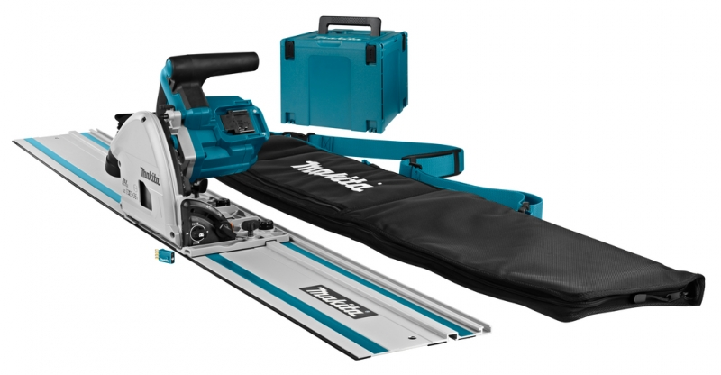

Outils Élèctroportatifs¶
le lab posséde une collection électroportative comprené des outils alimenté par des batterie. il permette de travailler en extérieur sans avoir de "fil à la patte".
Scie plongeante circulaire DSP-601¶

Modèle : DSP600 DSP601 Diamètre de lame 165 mm Profondeur max. de coupe à 0° 56 mm en biseau à 45° 40 mm en biseau à 48° 38 mm Vitesse à vide 2 500 à 6 300 min-1 Longueur totale 346 mm Tension nominale 36 V CC Batterie BL1815N, BL1820, BL1820B, BL1830, BL1830B, BL1840, BL1840B, BL1850, BL1850B, BL1860B Chargeur DC18RC, DC18RD, DC18SD, DC18SE, DC18SF Poids net 4,4 à 5,1 kg
le lab possède la règle Makita 194925-9 1900 mm,2.7kg.
Il va sans dire que celle ci est fragile et que c'est un outil de précision toute déformation ou choc peuvent la rendre inutilisable
l'emsemble des batteries du lab sont nescessaires pour la faire fonctionner ;-)
En cas d'emprunt une boite adaptée est disponible
Perceuse visseuse 18 V -MAKITA DDF 481¶